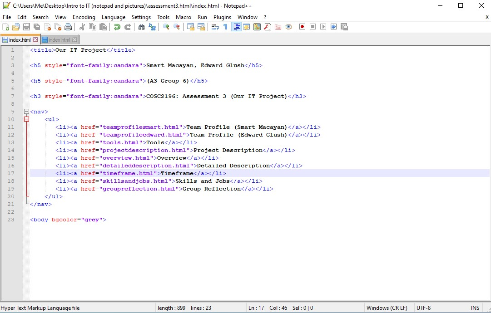
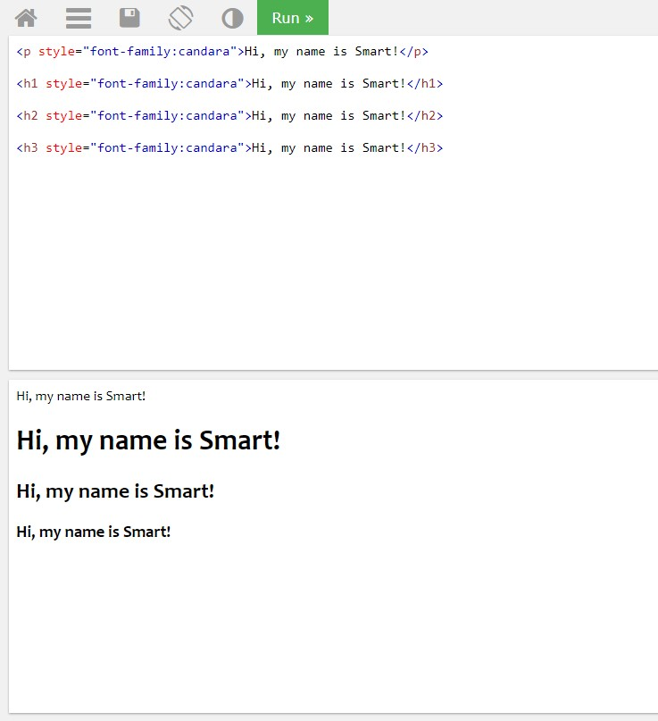

https://martyshotaro.github.io/assessment3/
https://github.com/martyshotaro/assessment3
The one who performed the action was myself, Smart, which is one of the group members of A3 Group 6. The action was creating a basic “index.html” folder via Notepad into the GitHub repository, It is done so the uploaded visual elements that include pictures can be successfully added to the GitHub template/website. Also, I added other HTML features that include adding a font family and a background colour change feature in the repository so that the website can add a little flavour into the website. Also, I added a hyperlink feature so that the links and sublinks that I provided in the repository can work. Lastly, other features that include putting a title, heading size change, paragraphs, preformatted formats, and line breaks. The last two features that I've mentioned were not used the usual way, but within my own preference. I performed these actions around late October and most of the days in November, but I frequently update the repository mostly everyday for changes that need to be made or other information being added to it. To sum this up, the GitHub log activity/audit trail reflects the group's work in this assignment in a positive way due to the time, effort, necessary actions and knowledge that were put into this assignment.
Examples of actions taken in the GitHub repository using HTML:
A HTML index file via Notepad:

The font family feature:

A background colour change:
A hyperlink feature:
A title feature:
A head sizing feature:
A paragraph feature:
An example of a preformatted format (used within my preference):
An example of a line break (used within my preference):
TechBoys
Smart Macayan, Edward Glush
https://teams.microsoft.com/l/team/19%3a5ce1ec22966042349dd22297c9559474%40thread.tacv2/conversations?groupId=0bffb3a9-e7da-44a5-98d4-d6174a45c33f&tenantId=d1323671-cdbe-4417-b4d4-bdb24b51316b
4/11/2020
https://web.microsoftstream.com/video/37d7963e-7118-4a87-9093-adeaf5312d6a
8/11/20
https://web.microsoftstream.com/video/4f477134-755b-4d1e-93c5-bf5721ae44d8
13/11/20
https://web.microsoftstream.com/video/5d5cc5d4-e621-4258-a2be-fdfd4524bab9
24/11/20
https://web.microsoftstream.com/video/4d3f9ccd-2263-4b7a-b328-167ae900d0ca